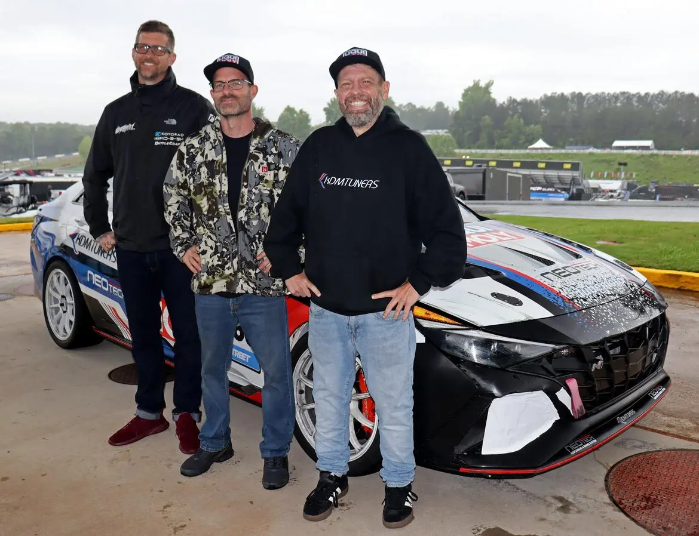
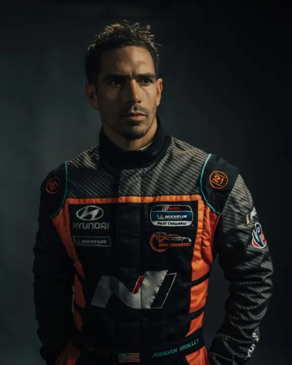
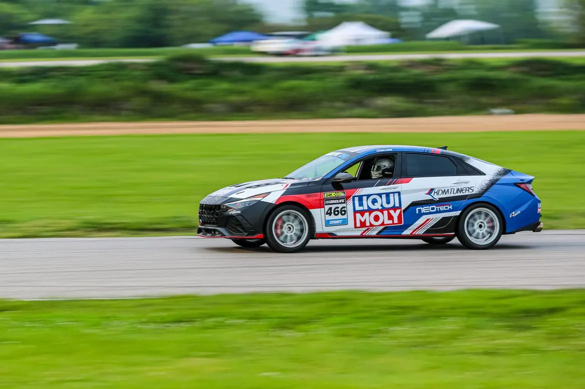
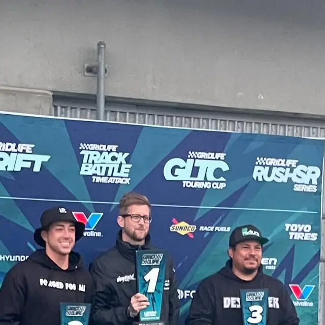
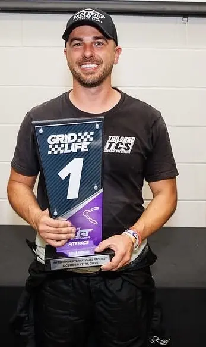
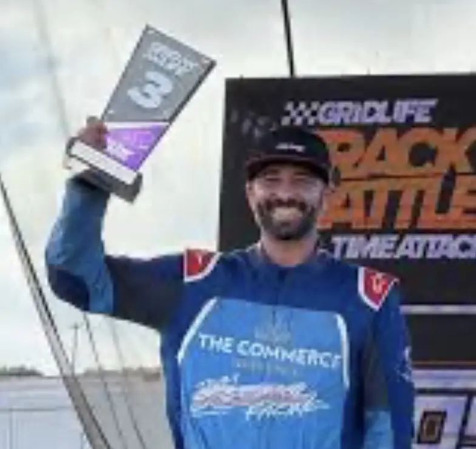

01INQUIRIES OPEN
Race programs
Competition support, driver preparation, event execution, and an arrive-and-drive program shaped around real goals—not generic seat time.

COMPETITION × INTELLIGENCE × MEDIA
SoCal N Motorsports connects real-world competition with an edge-first racing intelligence platform—creating faster learning and greater value on and off track.
We combine decades of automotive racing and live-media experience with a practical belief: the next advantage comes from understanding every lap, preserving every lesson, and turning the evidence into action.
Competition support, driver preparation, event execution, and an arrive-and-drive program shaped around real goals—not generic seat time.
An edge-first intelligence layer built to connect telemetry, onboard and broadcast video, vehicle data, and accumulated team knowledge.
Race media, technical storytelling, sponsor activation, and repeatable insight designed to create value well beyond a weekend at the track.

ON TRACK
Our arrive-and-drive programs combine the car, crew, preparation, coaching, and event support needed to turn up ready to perform. Programs are shaped around each driver's objectives for Zenith and GRIDLIFE competition.

DRIVER DEVELOPMENT
Driver Coach · SoCal N Motorsports
Jordan brings championship-level competitive discipline and touring-car experience to every coaching session. He helps drivers prepare before the event, build speed methodically, understand video and data, sharpen racecraft, and turn feedback into repeatable execution.
His coaching is integrated into SoCal N Motorsports arrive-and-drive programs, including Zenith and GRIDLIFE events, with support available for competition weekends, practice days, and hill climbs.
PROGRAM AT A GLANCE
Every program is scoped around the driver, event, and objective. Final availability and terms are confirmed before commitment.
A race-prepared CT4-V Blackwing, event preparation, trackside operations, and consumables are coordinated as one program.
Jordan Wiseley supports preparation, execution, video and data review, and the next actionable improvement.
Program insurance is included in the bundled offering. Coverage, exclusions, and driver responsibilities are confirmed in the agreement.
Zenith and eligible GRIDLIFE events, practice days, and hill climbs are available subject to scheduling and event requirements.
ABOUT US
SoCal N Motorsports combines competition, driver development, engineering and data, live-media expertise, partner activation, and event execution. As a sister company to KDM Motorsports, we connect the public-facing race program with Hyundai N preparation, setup knowledge, and practical trackside support.

TEAM PRINCIPAL · FOUNDER
Michael leads the program's commercial strategy, partnerships, operations, media, and racing-intelligence direction. His technology and live-media career spans Amazon live sports, HBO, NPR, Showtime, Accenture, and ABC/Disney—experience he applies to building a race organization that can connect competition, content, data, and measurable partner value.

DRIVER COACH · ATHLETE · PARTNER STORYTELLER
Jordan brings five championship wins on MTV's The Challenge, IMSA Michelin Pilot Challenge TCR experience, GRIDLIFE competition, and a high-performance mindset to driver development. His crossover credibility spans motorsports, competition, fitness, adventure, and creator-led storytelling.
THE CREW
TEAM CO-PRINCIPAL

TIME ATTACK DRIVER

PIT CREW CHIEF

GRIDLIFE GT DRIVER

GRIDLIFE GT DRIVER
THE PLATFORM
We are building a persistent, local-first intelligence layer that learns from real telemetry and media while keeping the team's knowledge close to the track.

Telemetry, video, timing, vehicle data, and race media.
Connect the driver, car, lap, corner, event, and evidence.
Turn raw signals into clear coaching, engineering, and media insight.
Make the next decision faster—and preserve what the team learns.
Current stage: working engineering prototype progressing toward a demonstration-grade MVP using real race telemetry and video.

BUILD WITH US
We are opening conversations with brands, technology partners, race organizers, and beta drivers who want to help shape a smarter racing ecosystem.
Authentic racing visibility, technical storytelling, reusable media, and a platform designed to measure more of the value created.
Collaborate across telemetry, connectivity, media, AI, data infrastructure, and trackside deployment.
Bring real telemetry and onboard video into beta workflows for coaching, comparison, and product development.
THE STORE IS LIVE
Shop SoCal N Motorsports apparel, track-day essentials, and human-reviewed digital racing products—all built around the same competition and development system.
Shirts, hats, jackets, and original track-culture graphics.
Shop apparel → 02 / TRACKSIDEUseful goods designed for the paddock, timing stand, and next event.
See the collection → 03 / DIGITALHuman-reviewed analysis products built from usable racing evidence.
Explore intelligence →01 Race program interest
02 Racing intelligence beta
03 Sponsor and technology partnerships
04 Online store and digital products
START HERE
Racing, arrive-and-drive, driver coaching, technology, or sponsorship—tell us where you want to go and we'll identify the most useful next step.